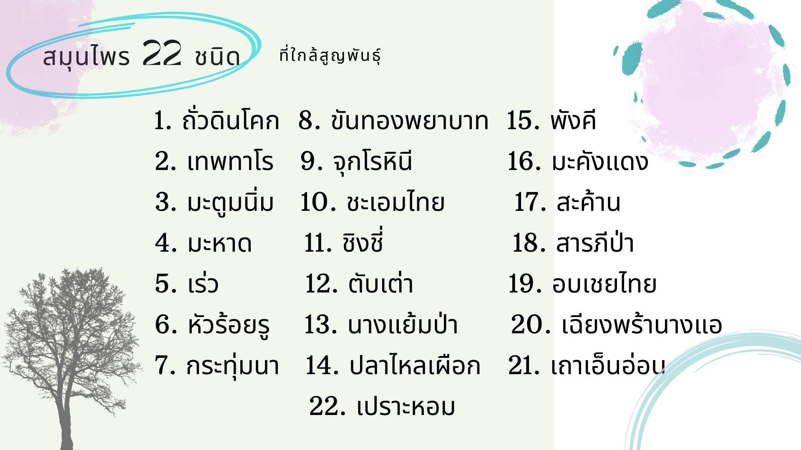

สมุนไพร 22 ชนิดที่มีการจัดให้เป็น สมุนไพรที่ใกล้สูญพันธุ์ โดยกระทรวงสาธารณสุข (สธ.) ซึ่งมี 22 พันธุ์ดังนี้
1. ถั่วดินโคก 2. เทพทาโร 3. มะตูมนิ่ม 4. มะหาด 5. เร่ว
6. หัวร้อยรู 7. กระทุ่มนา 8. ขันทองพยาบาท 9. จุกโรหินี 10. ชะเอมไทย
11. ชิงชี่ 12. ตับเต่า 13. นางแย้มป่า 14. ปลาไหลเผือก 15. พังคี
16. มะคังแดง 17. สะค้าน 18. สารภีป่า 19. อบเชยไทย 20. เฉียงพร้านางแอ
21. เถาเอ็นอ่อน 22. เปราะหอม

ใน 22 ชนิดนี้มีอยู่ 7 ชนิดที่ ถูกประกาศคุ้มครอง ที่ต้องมีการควบคุมหากใครมีอยู่ในครอบครองไม่ได้ถือว่ามีความผิด
อ่านต่อ